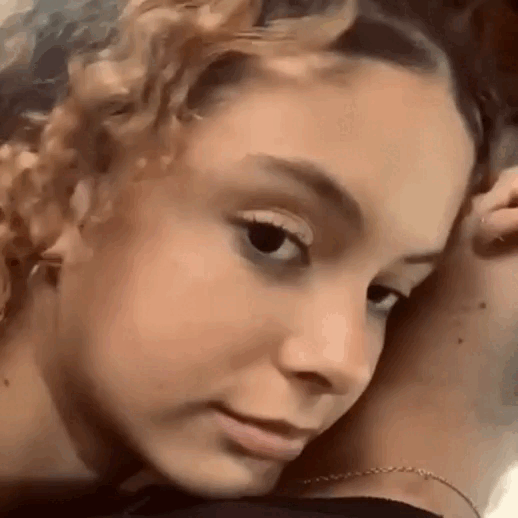
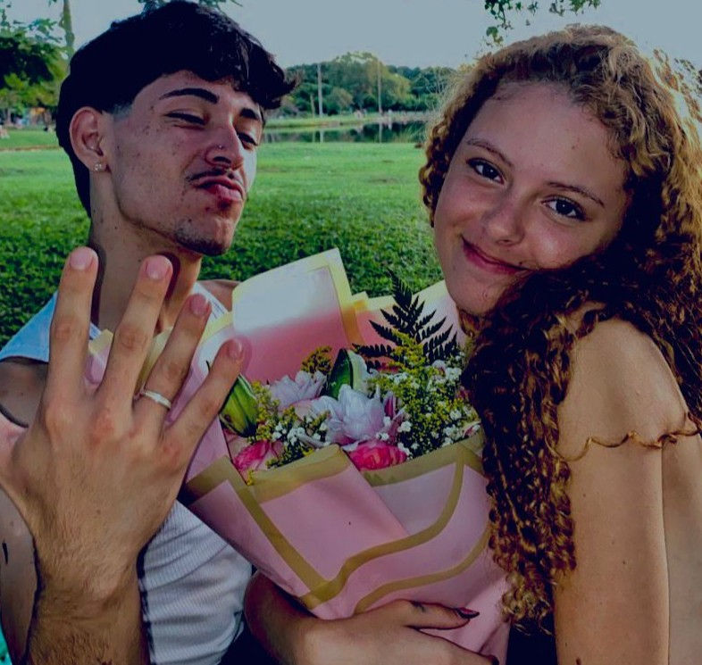

Namoro
Conheci a Maria no dia 29 de junho de 2025, em um aniversário que, sem eu saber, acabaria se tornando um dos dias mais importantes da minha vida.
Ela estava deslumbrante, como sempre. Seus cabelos ruivos, seu olhar e aquele jeito único de ser prenderam completamente a minha atenção. Havia algo nela que me fazia querer olhar mais uma vez, ficar mais perto, descobrir quem era aquela pessoa que, em tão pouco tempo, já tinha conseguido mexer tanto comigo.
No começo, nós dois estávamos muito tímidos. Eu não sabia como me aproximar, nem o que dizer. Mas, depois de criar coragem, finalmente decidi conversar com ela.
E hoje eu posso dizer, com toda certeza, que aquela foi uma das melhores decisões que já tomei na minha vida.
Porque, naquele momento, eu não estava apenas iniciando uma conversa. Sem perceber, eu estava dando o primeiro passo para conhecer a pessoa que se tornaria uma das partes mais importantes da minha vida. ❤️

Graças a ela, eu vivi os momentos mais felizes e inesquecíveis da minha vida. Cada instante ao lado dela se tornou especial para mim, e eu me apaixonei não apenas por ela, mas também por cada lembrança, cada conversa, cada sorriso e cada momento que compartilhamos.
Foi vivendo tudo isso ao lado dela que percebi algo que, no fundo, meu coração já sabia: era ela quem eu queria ao meu lado pelo resto da minha vida.
Eu não queria apenas viver momentos com ela. Eu queria construir uma vida inteira de momentos ao lado dela.
E foi com esse sentimento no coração que, no dia 10 de novembro de 2025, tomei uma das decisões mais importantes da minha vida: pedi a Maria em namoro.

Desde então, construímos juntos uma história cheia de alegria, experiências incríveis e momentos que guardarei para sempre no coração. Ao longo desse tempo, aprendemos muito um com o outro, crescemos juntos e nos tornamos cada vez mais unidos.
Nem todos os dias são perfeitos, mas sempre buscamos conversar, nos entender, resolver nossas diferenças e permanecer o mais próximos possível. E talvez seja isso que torne nosso relacionamento tão especial: saber que, independentemente do que aconteça, podemos contar um com o outro.
Eu sei que posso contar com ela, assim como ela sabe que sempre poderá contar comigo.
Eu a amo profundamente. Amo quem ela é, amo quem somos juntos e amo cada lembrança que construímos até aqui. E, se depender de mim, ainda teremos uma vida inteira para criar muitas outras.
Por isso, dedico este site inteiramente a ela, como uma pequena forma de colocar em palavras todo o amor, carinho e gratidão que sinto por ter a Maria na minha vida. ❤️